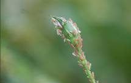
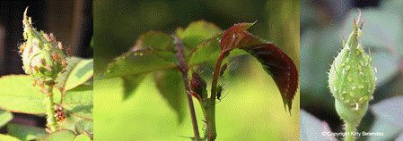

| Home |
| PEST OF ROSE |
mAJOR PESTES |
| 1. Rose thrips |
| 2. Red scale |
| 3. Red spider mite |
| 4. Rose aphid/lice |
mINOR PESTES |
| 1. Hairy caterpillar |
| 2. Castor semilooper |
| 3. Flower chaffer beetle |
| 4. Leaf folder |
| 5. Leaf cutting bee |
| Questions |
| Download Notes |
ROSE :: MAJOR PEST :: PESTS OF ROSE
4. Rose aphid/lice: Macrosiphum rosaeformis (plains); M. rosae (hills)(Aphididae:
Hemiptera)
Distribution and status: Northern India, Punjab, Delhi, Mysore, Andhra Pradesh and the Nilgiri Hills
Host range: Rose
Damage symptoms : Adults suck saps from the tender leaves, buds and twigs resulting in disfigurement and withering of flowers. They make punctures, producing wounds, which leaves mark as the flowers open. Black fungus develops on the honey dew excreted by the insects.
|  |  |
Bionomics :
Small pear shaped soft-bodied aphids, light green to dark blackish green in color. Apterous form has an elongated body, large red eyes, black cornicles and yellowish green tip at the abdomen. Nymphal development completed in 11-14 days in apterous forms and 14-19 days in alate forms. Aphid multiples rapidly in late spring but cannot withstand the summer heat.
Management :
Variety Damask is susceptible while Hawaii is comparatively resistant.
Spray malathion 50 EC 500 ml or methyl demeton 25 EC 500 ml in 500 -750 L of water /ha.